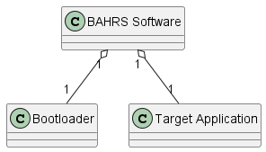
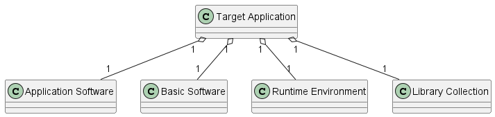
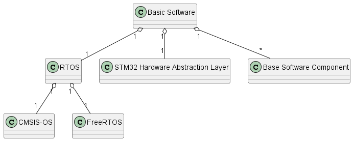
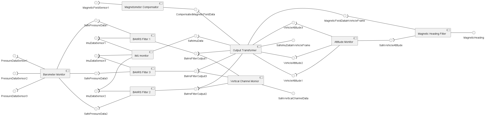
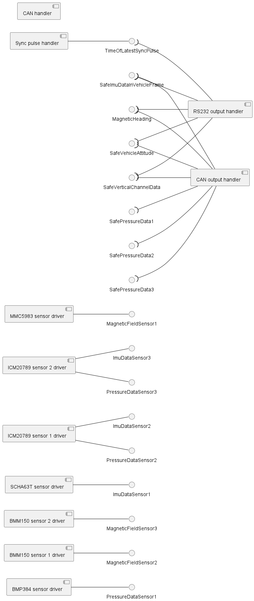

Level 0

BAHRS SW class diagram
Level 1
Target Application is devided into Application Software (ASW), Basic Software (BSW), Runtime Environment (RTE), and library collection.

BAHRS Target Application class diagram
Application software
ASW is a collection of software components that enable the device to perform its main functions.
Basic software
BSW is a collection of software components and libraries that implement generic embedded functionality, such as initialization of peripherals, scheduling, output data transmission, etc.
Runtime Environment
RTE is a middleware that enable safe data exchange between software components. RTE presents a collection of software component ports that are used by software components for data exchange.
Level 2
Basic software

Basic Software Class Diagram
Unlike application software components, basic software components can use HAL APIs.
List of basic software components
- BMP384 sensor driver: implemented by CBmp384Driver
- BMM150 sensor 1 driver: implemented by CBmm150Driver
- BMM150 sensor 2 driver: implemented by CBmm150Driver
- SCHA63T sensor driver: implemented by CScha63TDriver
- ICM20789 sensor 1 driver: implemented by CIcm20789Driver
- ICM20789 sensor 2 driver: implemented by CIcm20789Driver
- MMC5983 sensor driver: implemented by CMmc5983Driver
- RS232 output handler: implemented by CRs232OutputHandler
- CAN handler: implemented by CCanHandler
- CAN output handler: implemented by CCanOutputHandler
- Sync pulse handler: implemented by CSyncPulseHandler
Runtime environment
Runtime environment (RTE) is a collection of software component (SWC) ports and their attributes. RTE is responsible for initialization of SWC ports. A port is a mutex-protected memory that is used by software components for data exchange. Software component ports are implemented by the template CSoftwareComponentPort. RTE is implemented as a singleton object (CRte) with static memory allocation. SWC ports are private members of CRte. Only selected friend functions and classes are allowed to access SWC ports.
Application software
Application software is comprised of multiple software components that implement core functionality of the device. Application software components must not use HAL APIs directly.
List of application software components
- IMU Monitor: implemented by CImuMonitorSwc
- Barometer monitor: implemented by CBaroMonitorSwc
- Magnetometer compensator: implemented by CMagnetometerCompensator
- Output transformer: implemented by COutputTransformer
- BAHRS filter 1: implemented by CBahrsFilterSwc
- BAHRS filter 2: implemented by CBahrsFilterSwc
- BAHRS filter 3: implemented by CBahrsFilterSwc
- Attitude monitor: implemented by CAttitudeMonitorSwc
- Vertical channel monitor: implemented by CVerticalChannelMonitorSwc
- Magnetic heading filter: implemented by CMagneticHeadingFilterSwc
Level 3
Application software
UML component diagram

Component diagram: application software
Basic software
UML component diagram

Component diagram: basic software